Controlling Spreading Bamboo
1
Installing a 30 inch rhizome barrier (60 mil in thickness of “HDPE” high density polyethylene), keeping 3 inches above ground around the perimeter of your desired growth area. (We carry barrier and sell it by foot. Please inquire). This also requires an annual visual examination and pruning of any rhizomes wanting to escape over the 3 inch high barrier. When filling the hole after placing the barrier, tightly compact the soil next to the barrier. Any soil amendments must be added only in the top foot or so as to not encourage deep rhizome growth.
Another benefit of using a barrier, is that all growth is directed where you want it, producing a faster fill-in than without a barrier. Digging to 27” inches to install your barrier is more work, but you have much better control of your bamboo growth.
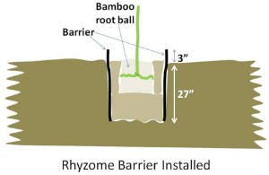
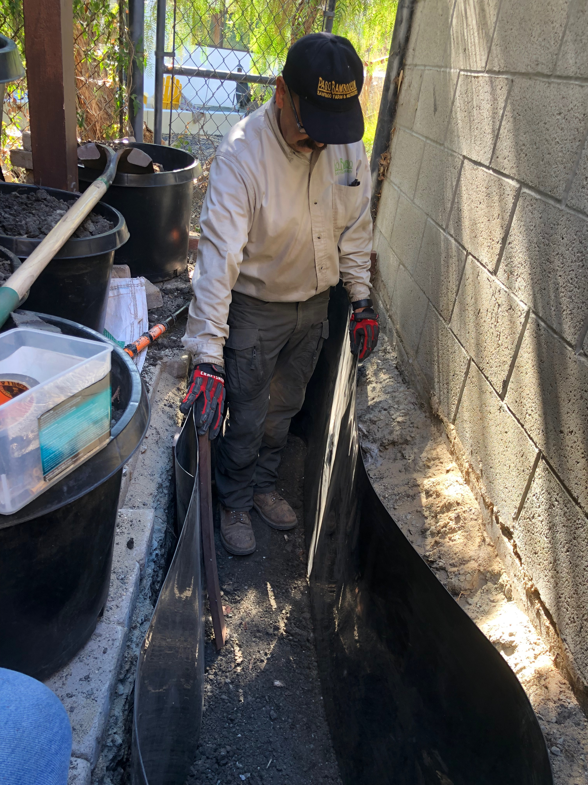
Laying out the barrier inside the trench
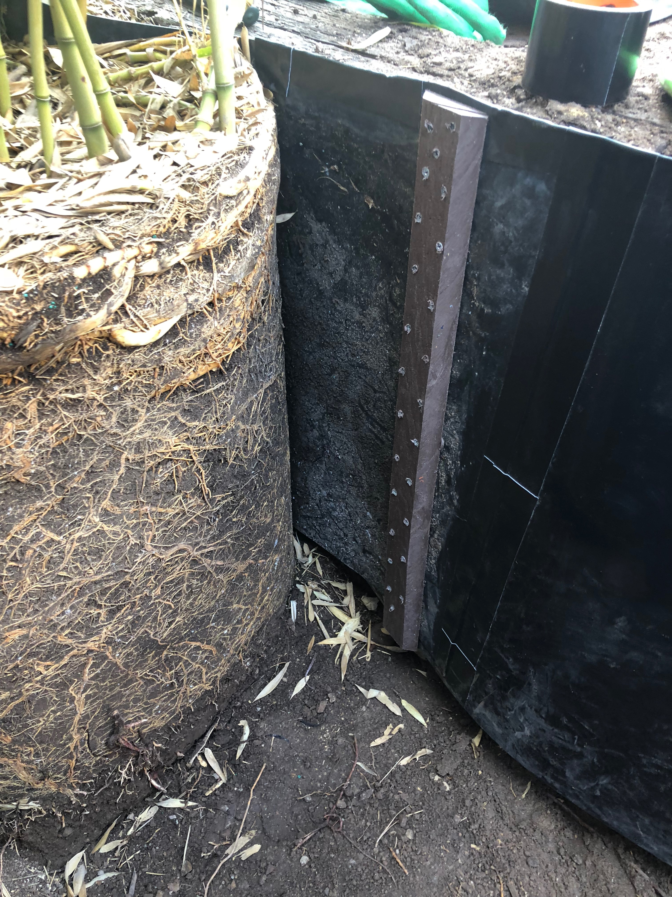
Here we attached the overlapping barrier ends with our clamp
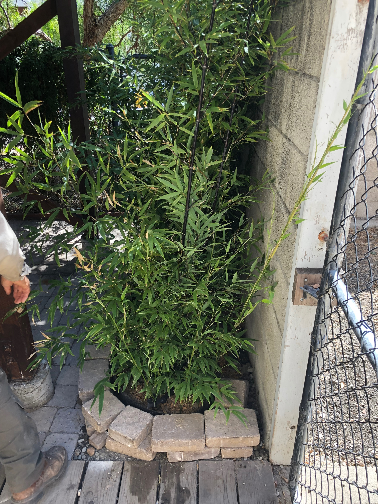
You can hide the 3" of exposed root barrier with stones/bricks

Measuring out the spacing where each bamboo plant will go

Tightening the ends to push out any ripples on the barrier

It is important to have dug nicely rounded ends
2
Bamboo being a grass requires water to flourish, in dry climates such as in California, it can be controlled by laying drip irrigation in the direction of the areas you want to screen. The bamboo will follow the water moisture. From time to time bamboo rhizomes will deviate from this path but it will quickly realize no water is present and fall back in line where the water is. We have a 500 foot privacy hedge of timber bamboo along our road frontage. Here over time the bamboo has sent rhizomes to other areas but they do not flourish because of lack of water.
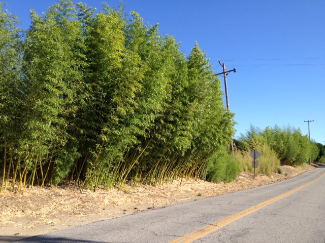
3
A small 12 inch deep exposed trench around the perimeter of your desired area also works. You must however, prune the visible rhizomes a couple of times a year, late summer and fall. Once you prune a rhizome, the growth is diverted perpendicular to the cut, filling in your desired area.
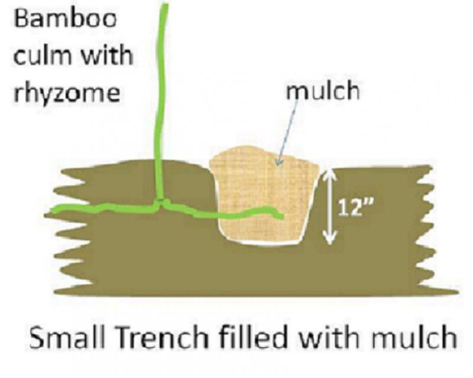
4
You can also enjoy bamboo in pots, even the Timber varieties. Every few years you must divide your potted clump to provide room for rhizome growth. Provide at least 2 inches of space around the pot for the following spring's rhizome growth. We have a 30 foot Madake Timber bamboo planted in a 25 gallon half wine barrel that is set against our mission style house and it is quite striking.
And some 15 foot temple bamboo marking our entrance.
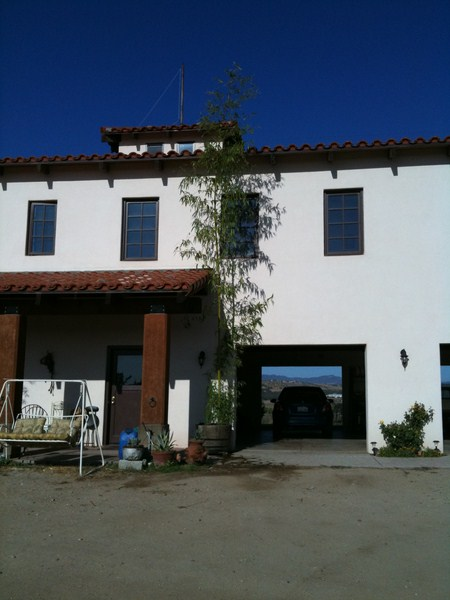
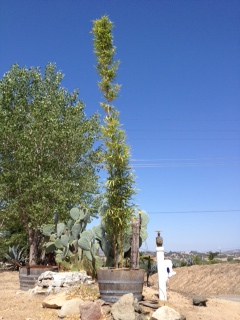
5
Another great option is to use raised beds. This will restrict your bamboo to the size and shape of your bed. One easy way to form curved raise beds is to use rhizome barrier as your "bed" material. You can also place chicken wire below your bed to protect your bamboo from gophers. You can then cover your raised bed with rock or any material you choose.
An easy way to make an above ground planting with bamboo is utilizing the root barrier. Just like how it is used below ground to contain the bamboo, it also holds well above ground with the clamp.
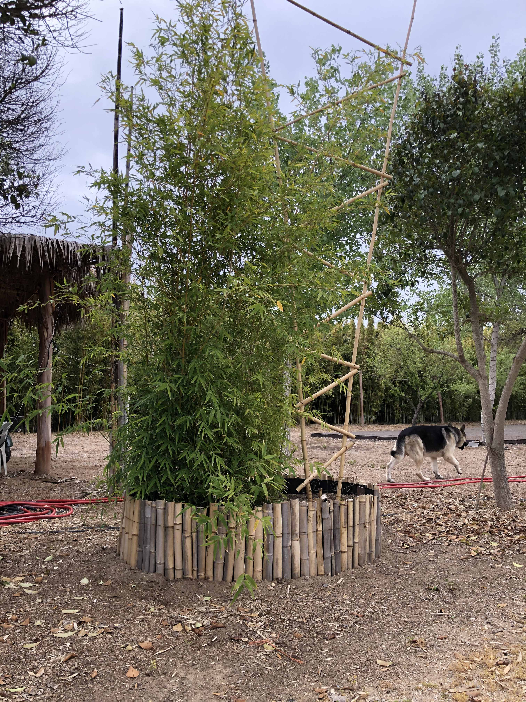
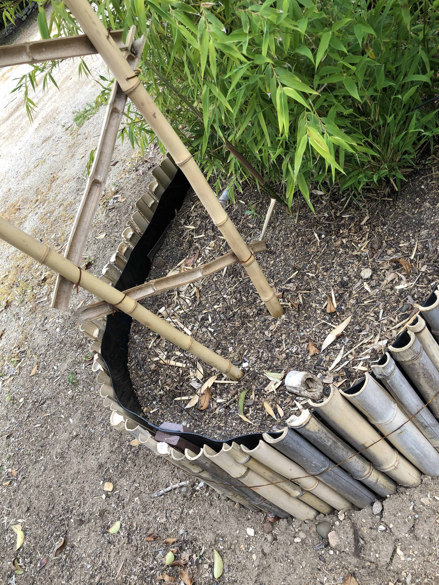
6
If you do get an "escape", that is a culm that grows in a unwanted location, it is very easy to break it off with your foot when is just emerging in the spring.
The new culms are very tender and are easily removed. If you want to remove the escaped rhizome, just dig where the culm emerged and pull on the rhizome to the escaped location and cut.
For a long screen you can also mow bamboo shoots that grow outside your designated border. This is how we maintain our grove borders.
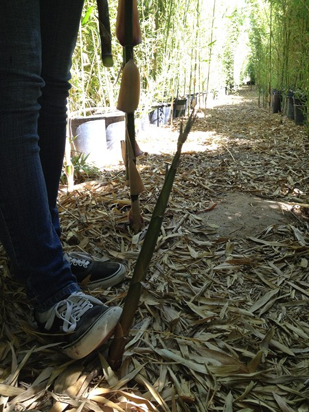